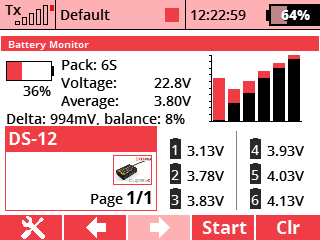

This application allows you to view detailed information about the flight battery such as type of the pack, number of cells, total voltage, cell voltage, and so on.
In the menu, choose Applications - User Applications. Press the F(3) key to open the application browser. Select the "BattMon" file here.
Open the application configuration by highlighting the app and pressing the 3D button. Here, select the sensor used to read the battery information. The application has been developed to read data using the MULi6S sensor, so we highly recommend it for use with this app.
In the menu, select Timers/Sensors - Displayed Telemetry . Create a new item here and select "Battery Monitor". The application will have its own desktop widget.
You can download the source code from the official JETImodel Lua-Apps GitHub repository.